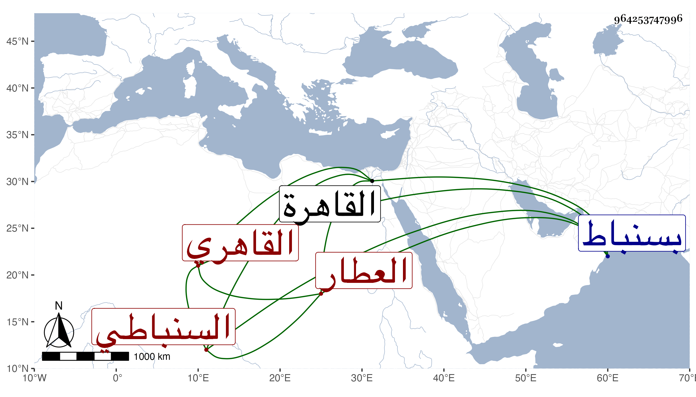

0902Sakhawi.DawLamic.ITO20230111-ara1.EIS1600.964253747996
Biography ID: 964253747996
937
عبد اللطيف بن محمد بن محمد بن محمد بن أحمد بن مسعود السنباطي ثم القاهري العطار أخو الشمس محمد الآتي . ولد في أول سنة تسع عشرة وثمانمائة بسنباط ونشأ بها فقرأ اليسير وقدم مع أبيه وأخيه القاهرة في سنة إحدى وثلاثين فكان مع أبيه في التسبب بحانوت من باب الزهومة في العطر وسمع على شيخنا وغيره ، وأجاز له خلق ، وحج مرارا وجاور غير مرة وارتفق به الطلبة ونحوهم في الاستجرار منه مع صدق اللهجة والسكون والمداومة على معيشته والتوجه لسعيد السعداء ثم بعد موت أبيه صاهر الشيخ محمد الفوي على ابنته وولدت له عدة أولاد وأثرى ولزم بعد موت أخيه أيضا طريقته في الانهماك ولكنه ما كان بأسرع من انقطاعه بالفالج وخلفه ولده الكبير في الحانوت .
